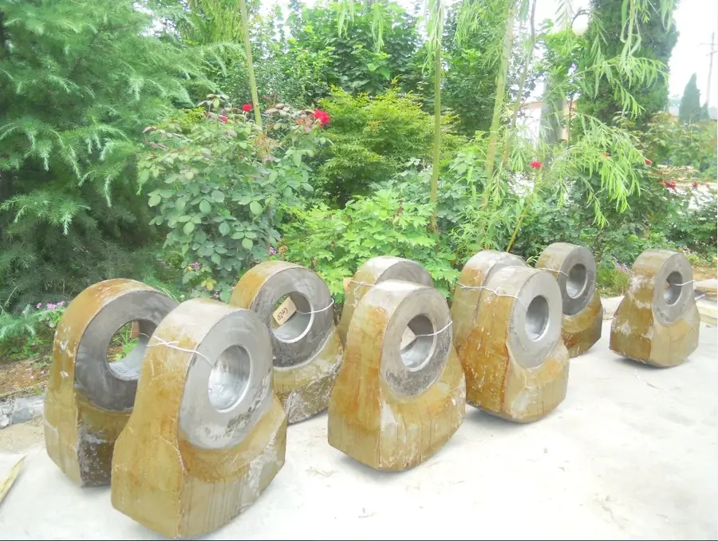
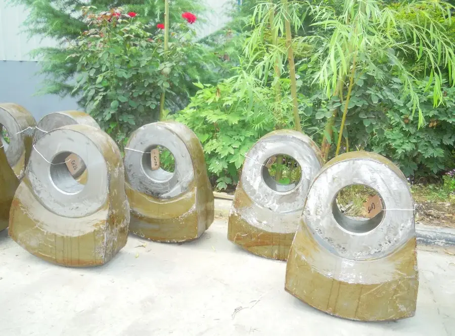

Молотковые HMF
Typical Applications
Галерея производства — Цех Anranst




.webp)

Молотковые HMF — Модели
| Модели | Детали |
|---|---|
| Модели | HMF series |
| Производительность | 20-500 tph |
| Размер питания | Up to 200mm |
| Размер продукта | 0-25mm |
| Скорость ротора | 500-1,500 rpm |
Совместимые модели (каталог OEM)
| Стадия дробления | Primary, Quaternary |
Детали
Молотки: высокомарганцевая сталь (Mn13-Mn18) или высокохромистый чугун. Колосники: Cr-Mo сплав.
Молотковые HMF Детали
Модели
Various
Детали
Молотки, колосники
Молоток / кольцевой молот
Качающиеся молотки для HDS-серии; уголь, соль, гипс
| Grade | C | Si | Mn | Cr | Mo | Ni |
|---|---|---|---|---|---|---|
| Mn13Cr2 | 1.05-1.20 | ≤1.0 | 11.5-14.0 | 1.5-2.5 | — | — |
Отличная способность к наклёпу; поверхностная твёрдость повышается под ударной нагрузкой
| Grade | C | Si | Mn | Cr | Mo | Ni |
|---|---|---|---|---|---|---|
| AISI 4150H | 0.47-0.54 | 0.15-0.35 | 0.65-1.10 | 0.75-1.20 | 0.15-0.25 | — |
Кованая структура с превосходной усталостной стойкостью; для высокоскоростных молотковых дробилок
| Grade | C | Si | Mn | Cr | Mo | Ni |
|---|---|---|---|---|---|---|
| Cr26 | 2.0-3.3 | ≤1.0 | 0.5-1.5 | 23.0-30.0 | 1.0-3.0 | ≤1.5 |
Сетка карбидов M7C3 обеспечивает превосходную износостойкость; срок службы в 3-5 раз дольше марганцевой стали
Колосник / решётка
Контролирует размер продукта; выдерживает удар молотков
| Grade | C | Si | Mn | Cr | Mo | Ni |
|---|---|---|---|---|---|---|
| Cr-Mo Alloy Steel | 0.15-0.25 | 0.30-0.60 | 0.50-0.80 | 1.00-1.50 | 0.45-0.65 | — |
Хорошее сочетание твёрдости и вязкости; для футеровки SAG-мельниц и решёток
Сито / колосниковая решётка
Колосники молотковой мельницы Hazemag для контроля крупности
| Grade | C | Si | Mn | Cr |
|---|---|---|---|---|
| Mn13Cr2 | 1.05-1.35 | ≤1.0 | 11.0-14.0 | 1.5-2.5 |
Стандартная наклёпываемая сталь; экономичный выбор для умеренных нагрузок
| Grade | C | Si | Mn | Cr |
|---|---|---|---|---|
| Mn18Cr2 | 1.05-1.35 | ≤1.0 | 16.0-19.0 | 1.5-2.5 |
Улучшенный наклёп; на 20-30% дольше Mn13 при высоком сжатии
Почему Anranst
- Кованые молотки AISI 4150H для HDS 1412-2032; превосходная усталостная стойкость при 500-800 об/мин
- Молотки Mn13Cr2 для угля; наклёп продлевает срок службы на 130-300%
- Полное покрытие HDS: 1412-2032, HUM 0703-1313, HRC 0505-1230